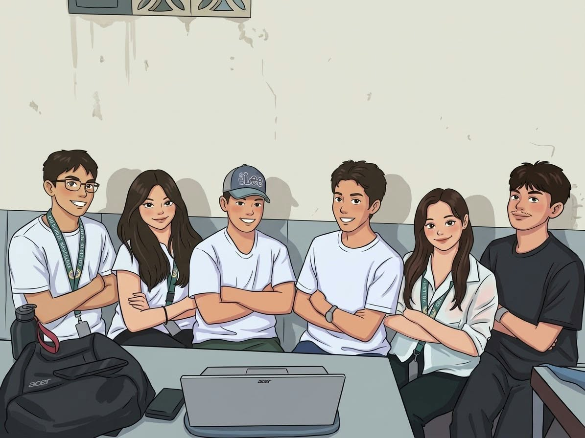

Find your fit
Browse groups by subject, schedule, and study style.
Small groups, shared goals, and a little less “I’ll do it tomorrow.”
Put your idea out there. Your people will find you.
Finding your people is the easy part. The rest is up to you (and maybe some snacks).
Browse groups by subject, schedule, and study style.
Join a group and introduce yourself. Awkward first hellos welcome.
Pick a time, bring your questions, and figure it out together.
Joza is a friendly campus space to find people who are learning the same things you are. Some groups are quiet, some talk it through, and some bring snacks. There’s room for every kind of learner.
Join an existing crew or start a group around whatever you’re working on. No perfect notes or big introductions needed—just show up as you are.
A student team building better ways to learn together.
18 years old · BSCpE-1C
“Ang Joza ng 1-C”
18 years old · BSCpE-1C
“Ang Super Mario ng 1C”
18 years old · BSCpE-1C
“Ang Dzaddie ng 1C”
18 years old · BSCpE-1C
“Ante Mema Ai ng 1C”
18 years old · BSCpE-1C
“Kain Po Tayo Team Ryza nang 1C”
18 years old · BSCpE-1C
“Mamaaa...! Ang Rene ng 1C”
Build a quick practice quiz from the Joza question bank.

Welcome to Joza—a cheerful little corner of campus where learning is better together.
Find people to study with, try a quick quiz, or meet the student team who made this space.